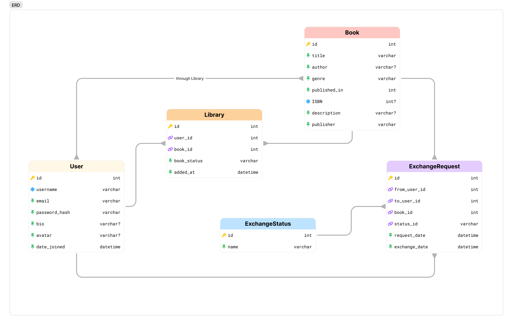

FastAPI
Модели
ERD

Описание связей
-
Пользователь (User) ↔ Библиотека (Library). Один пользователь может добавить много книг в свою библиотеку, но каждая запись в Library принадлежит только одному пользователю. User (1) → (∞) Library
-
Библиотека (Library) ↔ Книга (Book). Одна запись в Library привязана к одной книге, но одна книга может быть добавлена в библиотеку разными пользователями. Book (1) → (∞) Library
-
Пользователь (User) ↔ Запрос на обмен (ExchangeRequest). Один пользователь может отправить несколько запросов на обмен (from_user_id). Один пользователь может получить несколько запросов от других пользователей (to_user_id). User (1) → (∞) ExchangeRequest (как отправитель и получатель)
-
Книга (Book) ↔ Запрос на обмен (ExchangeRequest). Одна книга может участвовать в нескольких запросах на обмен. Book (1) → (∞) ExchangeRequest
-
Запрос на обмен (ExchangeRequest) ↔ Статус запроса (ExchangeStatus). Каждый запрос имеет один статус, но один статус может использоваться в нескольких запросах. ExchangeStatus (1) → (∞) ExchangeRequest
Замечание
Поле book_status в таблице Library характеризует связь между пользователем и книгой. Оно показывает состояние книги в контексте конкретного пользователя. Без этого поля Library просто связывала бы пользователей и книги, но не давала бы информации о доступности книги для обмена. Поле book_status добавляет смысловую нагрузку к этой связи.
Модели SQL
from datetime import datetime
from sqlmodel import SQLModel, Field, Relationship
from typing import Optional, List
class User(SQLModel, table=True):
id: int = Field(default=None, primary_key=True)
username: str
email: str
password_hash: str
bio: str
date_joined: datetime = Field(default_factory=datetime.utcnow)
library: Optional[List["Library"]] = Relationship(back_populates="user")
class Book(SQLModel, table=True):
id: int = Field(default=None, primary_key=True)
title: str
author: str
genre: str
published_in: Optional[int]
isbn: Optional[str]
description: Optional[str]
publisher: str
libraries: Optional[List["Library"]] = Relationship(back_populates="book")
class Library(SQLModel, table=True):
id: int = Field(default=None, primary_key=True)
user_id: int = Field(foreign_key="user.id")
book_id: int = Field(foreign_key="book.id")
book_status: str
user: User = Relationship(back_populates="library")
book: Book = Relationship(back_populates="libraries")
class ExchangeStatus(SQLModel, table=True):
id: int = Field(default=None, primary_key=True)
name: str
exchange_requests: List["ExchangeRequest"] = Relationship(back_populates="status")
class ExchangeRequest(SQLModel, table=True):
id: int = Field(default=None, primary_key=True)
from_user_id: int = Field(foreign_key="user.id")
to_user_id: int = Field(foreign_key="user.id")
book_id: int = Field(foreign_key="book.id")
status_id: int = Field(foreign_key="exchangestatus.id")
request_date: Optional[datetime] = None
exchange_date: Optional[datetime] = None
status: ExchangeStatus = Relationship(back_populates="exchange_requests")